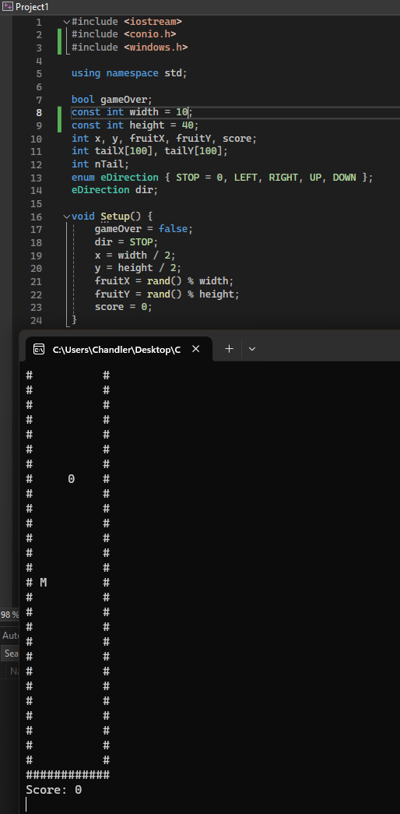
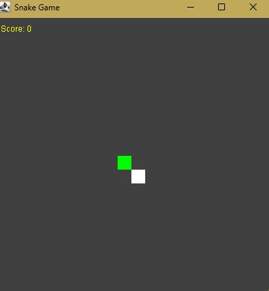
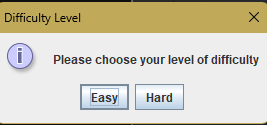
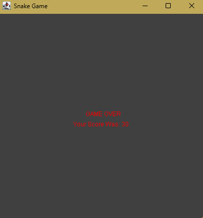
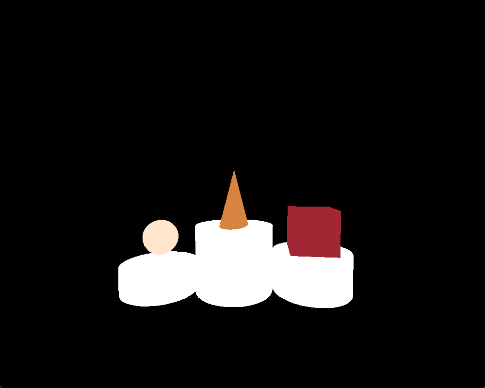
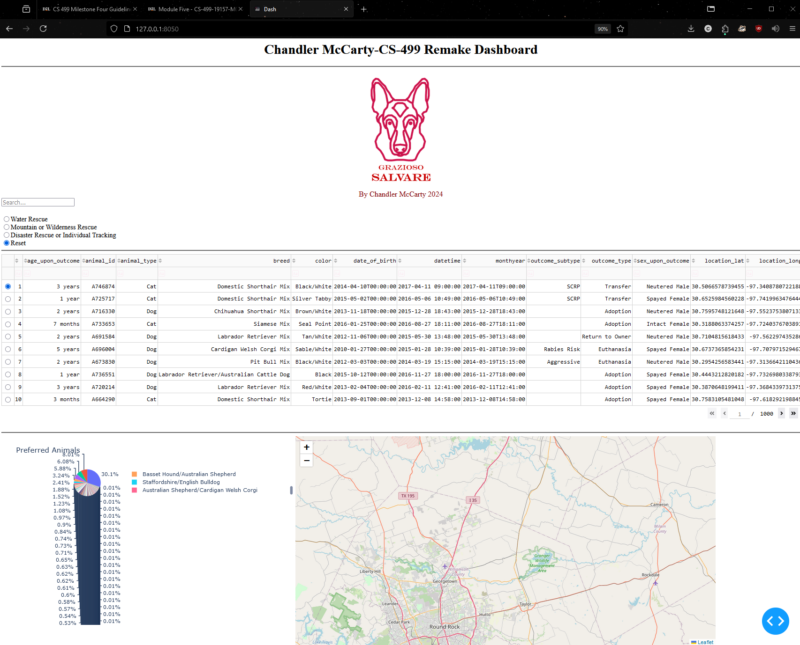

Artifacts
Below are three artifacts that I have chosen to showcase the different skills I have learned throughout the CS program that I feel aligned with the learning outcomes of the CS-499 Capstone.
Software Design
Artifact 1: Snake Game Translation
This artifact was chosen to showcase my skills in software design. For this project, I wanted to take a simple snake game I created at the beginning of my computer science program and enhance it.
I started with a program originally coded in C++ that couldn't function properly due to the poorly designed code and lack of comments to organize different sections. To showcase my skills in software design, I wanted to completely transfer the original code to Java while also adding more features.
With the transition to Java, allows for a better design for the game and adds the ability to create new features such as a difficulty selector, pause function, and a high score. Allowing the player more freedom and replayability.
  Algorithms and Data Structures
Artifact 2: 3-D Render's with C++
To showcase my ability to adapt to different algorithms and data structures, I chose a project from CS-330 at SNHU. Where we learned to create 3-D objects and render scenes with C++ and Visual Code. The original project was a simple render of shapes that was flat and unresponsive.

From the beginning of this course, I wanted to use this project to showcase my skills in creating a more interactive environment. To do so, I added different levels of immersion. First, the ability to move around the scene using keyboard and mouse functions. Then adding moveable functions to the shapes. Each shape has its own axis that it rotates on during the render. After that, I wanted to add something that would catch the eyes of the users, so I added shape-shifting to the three shapes using a matrix multiplication changing the size of each shape.
Adding these features demonstrated my knowledge of different forms of algorithms and data structures while also showcasing my ability to learn new ways to implement learned skills.
Databases
Artifact 3: Austin Animal Shelter Database
For the third and final artifact, I needed to show my ability to work on databases. Here at SNHU, we have learned a lot about working with MongoDB and MySQL, but they are all mostly on virtual machines that we have to use and can't really store anything locally. That is why I decided to use the web application from CS-340 called Grazioso Salvare Animal Shelter Dashboard. This is the perfect artifact to demonstrate my skills with databases. Since this was originally stored on a virtual machine provided by the school, I wanted to show off my skills by recreating the entire system, dashboard, connection to a database, and web design all locally.
Since the Apporto platform we used as the virtual machine was Linux, I needed to translate all the code into Python for it to work with Windows. Using a Dash Framework and MongoDB, I was able to re-create the entire system and tweak the design to make it more functional as well.
Recreating this project locally, demonstrates my skills in developing a multi-leveled web application that connects with PyMongo servers all while using a Dash Framework that updates seamlessly with a set of data.
By implementing a CRUD model into the framework, we can delete, edit, create, and read different assets in the datasets.